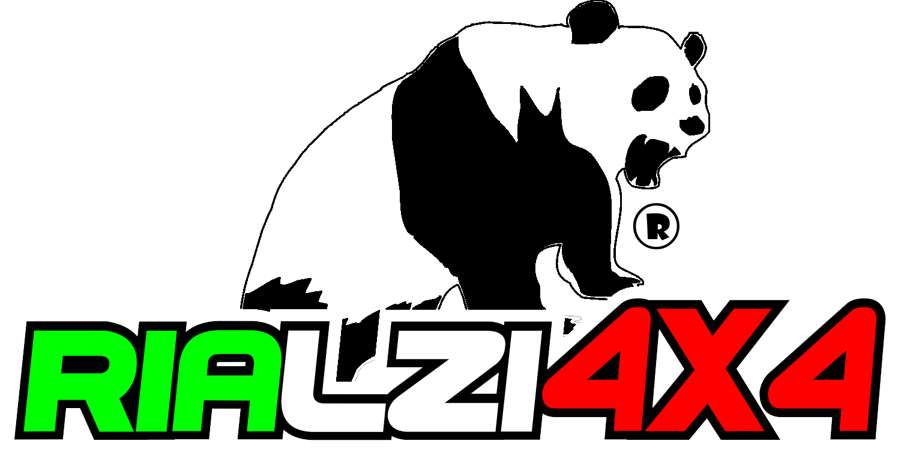

INSIEME SULLA STRADA
Insieme
sulla strada.
Le collaborazioni che accompagnano il progetto della Panda di Zio Nicola: PZRTech e Rialzi 4x4.
IL PARTNER
PZRTech × La Panda di Zio Nicola
La collaborazione è nata con l’invio dell’i-meter P100 da parte di PZRTech. Il dispositivo è il protagonista di questa nuova avventura insieme.
 IL PRODOTTO DELLA COLLABORAZIONE
i-meter P100
Tocca per scoprire la storia ↗
IL PRODOTTO DELLA COLLABORAZIONE
i-meter P100
Tocca per scoprire la storia ↗
LA STORIA DEL PRODOTTO
Un nuovo arrivo per la Panda
PZRTech ci ha inviato il suo i-meter P100 e siamo felici di raccontare questa collaborazione alla community della Panda di Zio Nicola.
Questa pagina si arricchirà con la nostra esperienza e con i dettagli del prodotto man mano che li documenteremo. Per ora condividiamo solo ciò che sappiamo con certezza: il partner è PZRTech e il prodotto ricevuto è l’i-meter P100.
Grazie a PZRTech per aver pensato alla Panda di Zio Nicola.
IL PARTNER
Rialzi 4x4 × La Panda di Zio Nicola
Una realtà specializzata in accessori e componenti per preparare e modificare le Fiat Panda 4x4.

PARTNER
Rialzi 4x4
Tocca per scoprire di cosa si occupa ↗
DI COSA SI OCCUPA
Componenti e preparazioni per Panda 4x4
Rialzi 4x4 propone ricambi, accessori e soluzioni per modificare e preparare le Fiat Panda 4x4. Nel catalogo si trovano, tra gli altri, ammortizzatori rinforzati e rialzati, kit di sospensioni e componenti dedicati alle diverse serie della Panda.
Per conoscere i prodotti disponibili e verificare la compatibilità con la propria auto, visita il sito ufficiale di Rialzi 4x4 .
Felici di avere Rialzi 4x4 tra le collaborazioni del progetto.